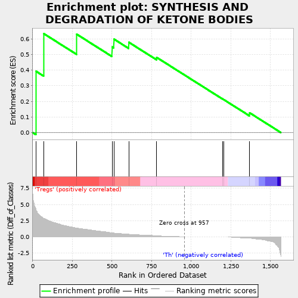
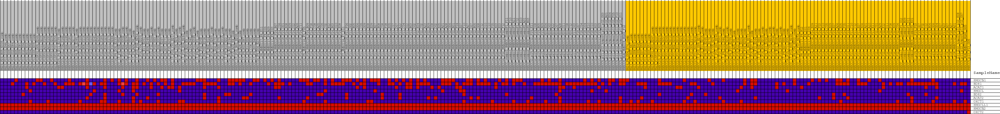
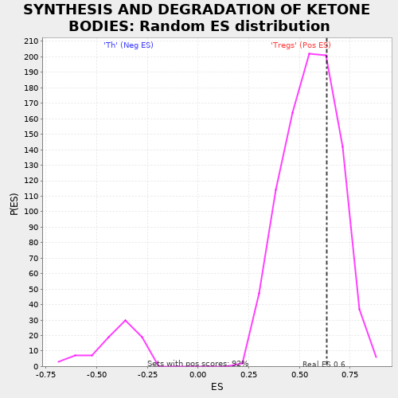

| | | Dataset | expr.pheno.cls#Tregs_versus_Th |
| Phenotype | pheno.cls#Tregs_versus_Th |
| Upregulated in class | Tregs |
| GeneSet | SYNTHESIS AND DEGRADATION OF KETONE BODIES |
| Enrichment Score (ES) | 0.6347858 |
| Normalized Enrichment Score (NES) | 1.1463903 |
| Nominal p-value | 0.28961748 |
| FDR q-value | 0.8740841 |
| FWER p-Value | 1.0 |
Table: GSEA Results Summary

Fig 1: Enrichment plot: SYNTHESIS AND DEGRADATION OF KETONE BODIES
Profile of the Running ES Score & Positions of GeneSet Members on the Rank Ordered List
| PROBE | DESCRIPTION
(from dataset) | GENE SYMBOL | GENE_TITLE | RANK IN GENE LIST | RANK METRIC SCORE | RUNNING ES | CORE ENRICHMENT | | 1 | HMGCS1 | na | | | 21 | 4.306 | 0.3929 | Yes |
| 2 | BDH1 | na | | | 69 | 2.883 | 0.6348 | Yes |
| 3 | ACAT1 | na | | | 277 | 1.368 | 0.6309 | No |
| 4 | HMGCL | na | | | 501 | 0.653 | 0.5492 | No |
| 5 | BDH2 | na | | | 512 | 0.602 | 0.5996 | No |
| 6 | ACAT2 | na | | | 606 | 0.417 | 0.5791 | No |
| 7 | OXCT1 | na | | | 782 | 0.160 | 0.4818 | No |
| 8 | HMGCLL1 | na | | | 1196 | 0.000 | 0.2164 | No |
| 9 | HMGCS2 | na | | | 1205 | 0.000 | 0.2113 | No |
| 10 | OXCT2 | na | | | 1368 | -0.206 | 0.1266 | No |
Table: GSEA details [plain text format]

Fig 2: SYNTHESIS AND DEGRADATION OF KETONE BODIES
Blue-Pink O' Gram in the Space of the Analyzed GeneSet

Fig 3: SYNTHESIS AND DEGRADATION OF KETONE BODIES: Random ES distribution
Gene set null distribution of ES for SYNTHESIS AND DEGRADATION OF KETONE BODIES